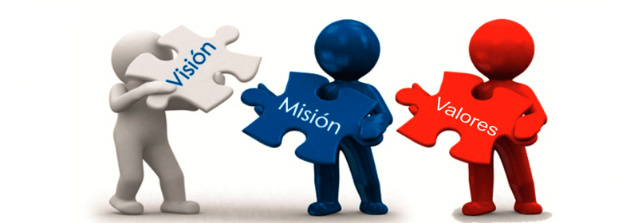

MISIÓN |
| UnFuturoMejor como organización no gubernamental busca ayudar a todas las familias victimas de la pobreza,
|
| siendo un canal en el cual, las personas pueden ayudar a familias afectadas por la pobreza. |
| Ser promotores de la erradicación de la pobreza extrema es nuestra prioridad. |
VISIÓN |
| Nuestra organización busca ser una ayuda en el proceso para cumplir con el objetivo de darle fin a la pobreza, |
Brindar recursos básicos a las familias mas necesitadas. |
Ser una fuente de ayuda para mejorar la calidad de vida de las familias mas vulnerables. |
Crear conciencia en las personas, donde todos entendamos que lograr dar fin a la pobreza es un trabajo de todos. |
Lograr reducir el indice de pobreza multidimensional que existe en la localidad de suba en los próximos 10 años. |
VALORES |
AMOR |
| Ser promotores de amor a las comunidades mas vulnerables y afectados por la pobreza extrema. |
| SOLIDARIDAD |
| Mantener siempre transparencia en las ayudas humanitarias, teniendo siempre un apoyo incondicional hacia las familias mas necesitadas |
| COMPROMISO |
| Tener esfuerzo y dedicación en cada ayuda para poder cumplir nuestra visión e ir mas allá de lo propuesto. |
| RESPONSABILIDAD |
| Formar una verdadera comunidad consiente que es necesario nunca dejar de ayudar y cada día lograr ayudar a mas personas sin buscar algún beneficio. |
| UNIDAD |
| Trabajar como equipo entendiendo que nuestro trabajo es por un bien común y no propio. |